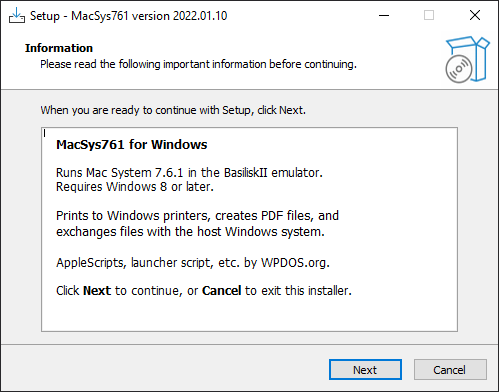
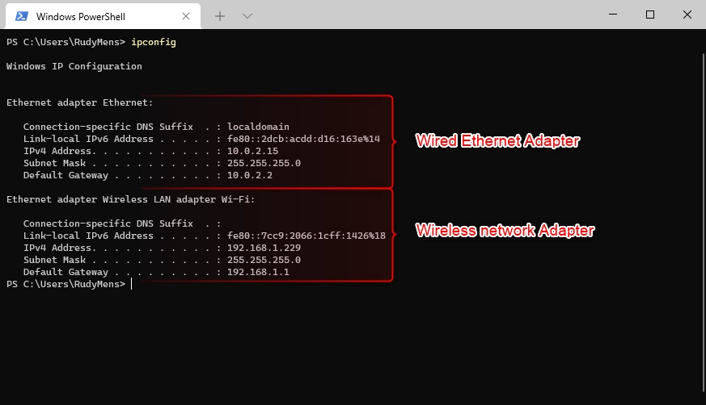
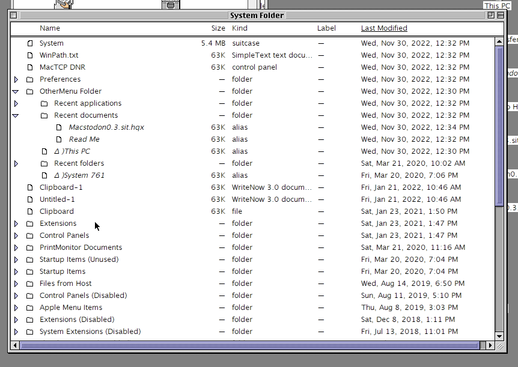
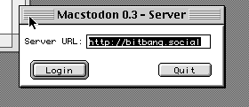
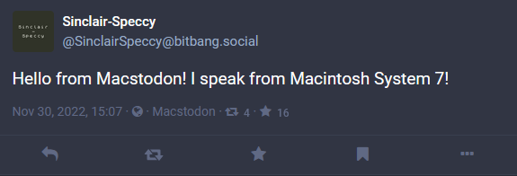
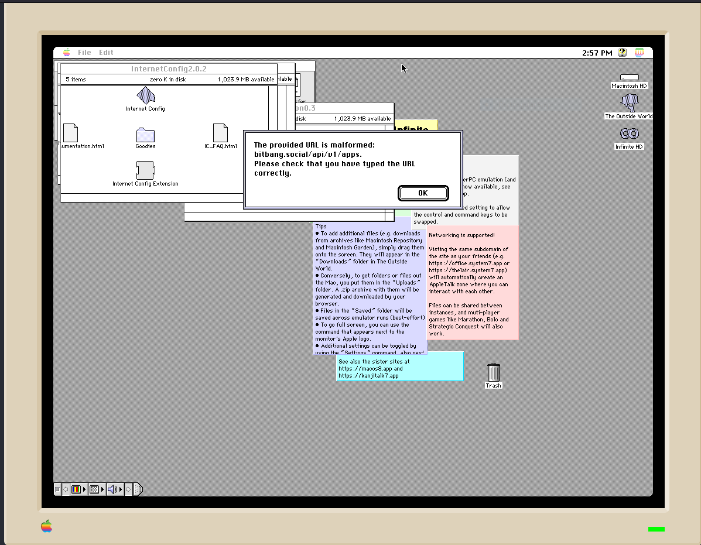

Running Macstodon (and some other small things)
Another guide after so long? Of course! This one is about how to setup both WebOne and Macstodon, a Mastodon client for 68k Macintoshes with a 68020, 68030, or 68040 processor. This guide was created as more of a visual representation as visual stuff is easier, right? This is also more of geared towards Windows and emulators as I do not own an old mac myself to try this (sorry if you think this was for running it on a old mac, but it may still work?). Will I make a Linux version of this guide? Maybe. Everything should work depending whenever it is macOS, Linux or Windows. The guide for WebOne on the WebOne repo itself also felt too complicated to follow for new users so this guides thorough that as well.
Macstodon is in active development so it doesn't support most of what you would expect from a standard Mastodon client right now like profiles, or boosting, or images. The creator, smallsco makes no promises or guarantees about future development. It is just a hack project and they might get frustrated or bored with it at some point (but it's open source, so anyone can contribute or fork it!)
As for my, this may have been rushed so feel free to message me on Mastodon or anywhere else for suggestions. This guide is a bit long too so sorry for that ^^;;
This guide is of relevant of the 0.3 version of Macstodon
Prerequisites
Before doing anything you will need some files first which are listed below:
- WebOne: A HTTP 1.x proxy server
- Macstodon: The Mastodon client for 68k Macintoshes
- MacSys761: The emulator
- iCab: Test the proxy is working
- Internet config: System 7 users configure every little bit of their internet applications all in one place
The other sections of this guide lists where to get these files from however if want to get them now you can do so. Now to get the prerequisites working
Macintosh System 7.6.1 App
Installing MacSys761
How does one run Macstodon without System 7? You need an emulator if you are like me, the webmaster, who doesn’t own a real Mac. You will also need to install the already set up version of System 7.6.1 from here
The download speed may vary depending on your wifi speed as the installer is 193 MB. Once downloaded, run the installer. User Account Control will ask if you want this app to make changes to the device. This is for installing it so click yes.

The installer will tell you some information as all installers do.
It will ask for an install location so pick whatever you like to install it.

Next it asks if you wish to make a desktop shortcut, but picking this option is up to you.

After that will say it is ready to install so proceed it and it will install.

Running MacSys761
Once installed, you will need to check if it installed correctly. Depending on whenever you made a desktop shortcut you can run it from the shortcut. If not, go to the destination where you installed it. The app will be called “MacSys761”. Clicking on it should run the emulator. The reason why I suggest using the already installed version is that it saves a lot of trouble and hassle with getting the internet to work, transferring programs, but you can also print from the emulator to your real printer!
Now that you have run it, you should get the Mac OS start up screen then have the desktop all ready for you. From here you can look around if you wish but for this guide we won’t be doing that.

iCab
You will need to grab a copy iCab 2.9.9 from emaculation forums here . It will be a sit file which Windows cannot open but the emulator can by dragging the sit file onto the icon for the MacSys761 app. If the transfer to System 7 was done correctly, you should get something like this:

Click on the sit folder to extract it. It should create a folder the same name as the sit file. From here you can run iCab from the folder that was created. It’s going to ask if you want to import bookmarks if you run iCab but we do not need to as of now.

WebOne
To get iCab to access the internet you’ll need to download WebOne from here . WebOne is a HTTP 1.x proxy server that makes old web browsers and media players usable again in the Web 2.0 world.
You’ll see there are many packages for different OSes. For this guide we will go with the Windows version that is 64bit. I prefer to use the full version so the file would be named “WebOne.0.12.3.win-x64.full.zip “. Once downloaded it, extract it somewhere where you will remember it is.

Contents of the extracted folder
Once extracted you should check out the contents of the folder. You should have some json files, dlls and exes. Webone.exe is the main executable we will use.

Running and Configuring WebOne
Next, you will need to set it up. How else can you use it without getting it working? When you first run the executable, Windows will give you a popup saying it protected your PC because it prevented an unrecognised app from running. This is just a false flag so click on more info then click run anyway.

You should get a command window open that looks like this. WebOne should be running from this point on however you can close it until later as for Macstodon to use WebOne properly, we need to make some changes to the config file used for WebOne with something like notepad++.

You may need to add your Mastodon server's hostname to the forcehttps section of WebOne's config file depending on how your Mastodon instance is configured as shown below. The Mastodon intances I added are bitbang.social and oldbytes.space.

You will also need to change the “user agent” to be configured to something modern-looking. Below is a known working example from the repo however you can find more here
Mozilla/5.0 (Macintosh; Intel Mac OS X 10_15_7) AppleWebKit/605.1.15 (KHTML, like Gecko) Version/16.2 Safari/605.1.15
But where do I put this in the config file?! Look for something like this.

This is before you edit it. You will need to remove “UserAgent=%Original% WebOne/%WOVer%” then put in the user agent as mentioned after the Windows NT one so it should show as this. If the image is too small, try opening it in a seperate window.

Last, you need to edit the host name. When you first started up WebOne in the top bar it would have had your PC name but this needs to be changed to your IPv4 address.
To find the IPv4 address open command prompt or powershell, type ipconfig and look for it. The provided image is merely an example but it shows how it should look depending on if you use an adapter or Ethernet.

Whatever one you use grab the IPv4 address and replace %HostName% with the ip. Save your changes, run WebOne again and your host name should no longer be your PC’s name but instead the IP address.

Internet Config
Internet Config is needed to add the WebOne proxy to System 7 and to test the proxy is working on iCab. You can grab a copy from here .Once downloaded drag the sit file to your MacSys761 shortcut or executable. Open that folder and you should get these contents:

Open the Internet Config app, select firewalls, and you should get a screen like this. Enable “Use HTTP Proxy” and put in your IP along with the port you used for WebOne’s proxy.

Run iCab in the emulator and try to load up google. You should get something like this and this means it is working.
Macstodon
Getting Macstodon
From the github repo, https://github.com/smallsco/macstodon/releases/, download the latest version of Macstodon. It should have the file extension “.sit.hqx”.
Getting Macstodon onto System 7 and Configuration:
Once downloaded, drag the file onto the MacSys761 app icon. Open the .sit.hqx and it should extract it to your desktop in the emulator in a folder.

In the folder you should have the Macstodon app itself, a read me file, a license file and another folder called “Required Extensions - System 7”.

The contents of that folder should be transferred to the Extensions folder which is a subdirectory of the System Folder. The Extensions folder and System Folder are in the hard disk named “System 761”.

Drag the contents of the Required Extensions into the Extensions folder. Since this is a pre-installed version of System 7 you may get an error about files having the same name. As a safety thing we will overwrite the existing ones. Once completed, restart the emulator by going to the apple logo, selecting restart or shut down, then restart the machine.

Running Macstodon
Next is running the app. Macstodon will ask for the server URL. If you try to log in without WebOne you will get some errors hence the changes done before were needed to make things work. My account is on bitbang.social so I type in https://bitbang.social without the https and slash at the end, so it would be http://bitbang.social.

Click “login”. You may get an error saying Internet Config is not installed

I ignore this since it copies the auth link to my clipboard which should be pasted into your browser on your real computer. Authorize your account then copy the code into something like notepad as Is and ls look the same. Go back to the emulator, click OK and now type in your code and click ok again.

If it works, you should get something like this meaning it has worked! The large box below each timeline is for viewing toots better.

You can change the size of the window.

To post a toot click on post toot, type your message in the new window tha appeared, then click toot.

If you look at your posted toot from a normal client, it shows you posted it from Macstodon.

If you ever restart the machine and load Macstodon up again, leave it some time to load everything as it will look like it has hung, but it has not.
FAQ
Does Macstodon work on places like system7.app?
Answer? No, it doesn't. It can't access servers on your local network and you need to run an SSL-stripping proxy like WebOne on another machine in order for Macstodon to work. I have tried this and you will get this error:

System7.app and such cannot get the IP you use for the WebOne proxy.
Comments